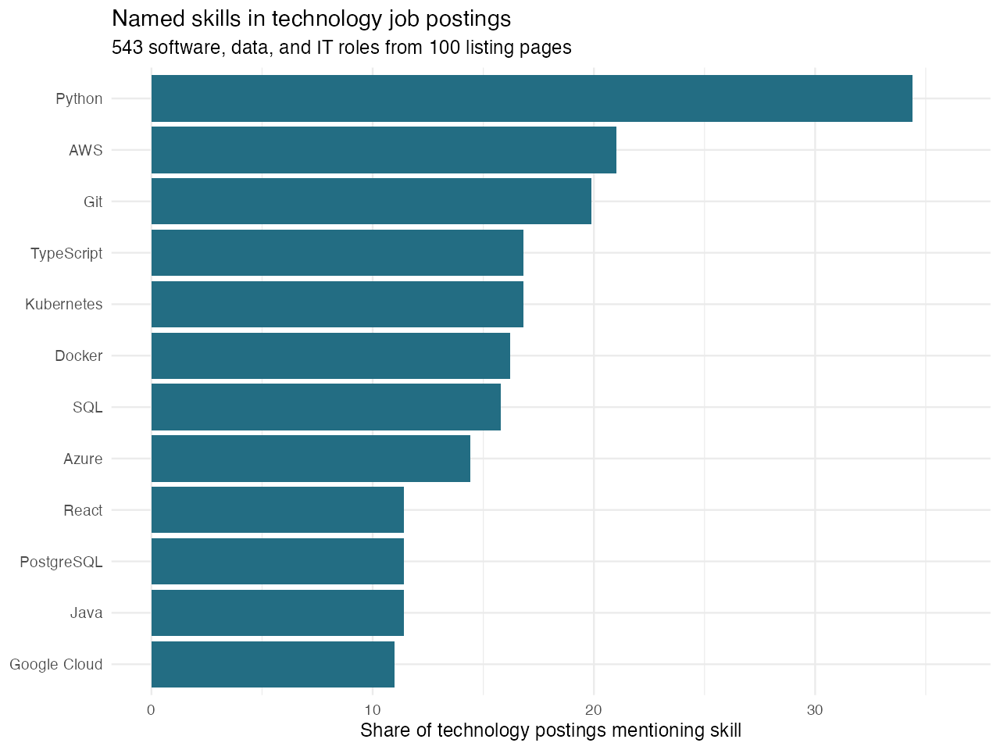
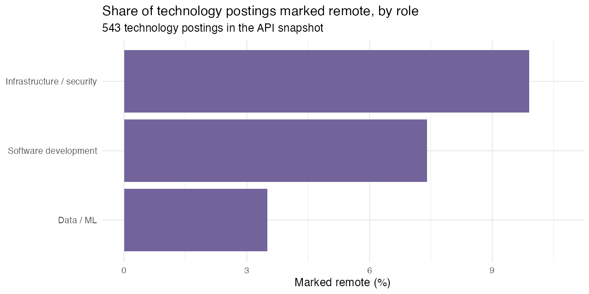

Code
library(rvest)
page <- read_html("data/raw/html/page-001.html")
links <- html_elements(page, "a[data-job-item-link]")
job_urls <- html_attr(links, "href")
job_titles <- html_text2(links)September 21, 2026
Learning a new tool takes time. For someone interested in a software, data, or IT job, should the next project use Python, TypeScript, a cloud platform, or something else? Does the board offer remote or entry-level opportunities? Job advertisements offer practical clues. I used Arbeitnow, a Germany-focused job board, to examine skills, role types, work arrangement, and experience level.
On September 21, 2026, my R collection script used rvest to read 100 public listing pages. It saved their HTML and extracted 5000 unique job titles and URLs. Of those titles, 1019 matched a documented software, data, or IT role pattern. Arbeitnow also offers a public job-board API with full descriptions; collecting its paginated feed avoided requesting thousands of individual job pages. The API ended after 29 pages of jobs and supplied 3153 unique descriptions, of which 543 matched the technology-role pattern. 1836 API jobs also appeared in the 100-page HTML snapshot. The two sources are snapshots of the same changing board, so their page lists do not line up exactly.
The API pagination helper manages the paced feed requests. The separate analysis script cleans description HTML, removes duplicate URLs, and searches for 20 named technologies. It counts a skill once per job even when the word appears repeatedly. Every skill percentage below divides by the 543 technology jobs with descriptions, not by all HTML listings. The scripts save the cleaned data, tables, and figures; the README gives replication commands. The complete project is in the GitHub repository. Collection used sequential requests with pauses, followed the site’s robots.txt, and used no login or access workaround. Arbeitnow’s API terms ask users to link back to the site.
| Skill | Postings | Share of technology postings |
|---|---|---|
| Python | 187 | 34.4% |
| AWS | 114 | 21% |
| Git | 108 | 19.9% |
| Kubernetes | 91 | 16.8% |
| TypeScript | 91 | 16.8% |
| Docker | 88 | 16.2% |
| SQL | 86 | 15.8% |

Python appears in 187 postings (34.4%), followed by AWS in 114 (21%) and Git in 108 (19.9%). Python and Git appear together in 64 postings. These are mentions, not proof that every employer requires the skill. Percentages do not sum to 100 because one posting can name several technologies.
The overall ranking hides important differences. My title-based groups contain 325 software development, 161 infrastructure or security, and 57 data or machine-learning postings. The two most frequently named skills in each group are:
| Role group | Skill | Postings | Within-group share |
|---|---|---|---|
| Data / ML | Python | 49 | 86% |
| Data / ML | SQL | 32 | 56.1% |
| Infrastructure / security | Kubernetes | 42 | 26.1% |
| Infrastructure / security | Python | 41 | 25.5% |
| Software development | Python | 97 | 29.8% |
| Software development | TypeScript | 78 | 24% |
Only 42 of the 543 technology jobs (7.7%) are marked remote. The other 501 have remote = FALSE in the source. That means not marked remote; it does not prove they require full-time office attendance. Remote shares are 9.9% for infrastructure and security, 7.4% for software development, and 3.5% for data and machine learning. The last figure comes from just 2 remote postings, so I would not infer a stable difference between fields.

Experience is another constraint: 198 postings (36.5%) include a senior or lead term in the title, while only 41 (7.6%) include an early-career term. The rest do not state a clear level in the title. An entry-level or remote job seeker should therefore filter listings by those needs before using the overall skill ranking to plan a project.
If I were targeting data or machine-learning roles, I would build a Python project that queries and analyzes data with SQL: those two skills appear in 49 of 57 data postings and 32 of them, respectively. For software development, I would show Python or TypeScript in a working application. For infrastructure, I would demonstrate deploying and monitoring an application with Kubernetes or a cloud service. These projects provide evidence of ability rather than a list of keywords on a résumé.
The sample has limits. Arbeitnow is one board, many jobs are Germany-focused, and the title filter may miss relevant roles. A technology mentioned in company background or as a preference is still counted. Only 378 of the 543 technology postings mention one of my 20 chosen terms, so the dictionary is incomplete. This analysis measures current advertised language, not hiring outcomes or the return to learning a skill.
The useful lesson is to choose a role and work arrangement first, then use job descriptions to prioritize a small, demonstrable set of skills. Python is the broadest starting point here, but SQL, TypeScript, and Kubernetes matter differently across roles. Remote and early-career openings are a small, specifically labeled part of this sample. Check target postings before investing in a course, and repeat the analysis as listings change.